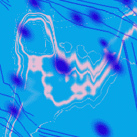
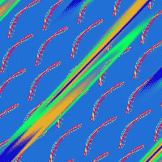

Невозможно солгать самому себе. Но, если запустить этот процесс в обратном направлении, становятся видны приметы и знаки последовательного развоплощения, когда каждый следующий ключ непременно подходит к двери, а за ней — ветер летнего зноя, узнанные звуки незнакомой мелодии, стук, совпадение, неслучайная бесконтрольная мысль, трепет перьев и неуловимая текучесть неба.
Если я действительно единственный человек здесь, и если я действительно создаю этот мир где-то чуть впереди самого себя, чтобы не знать, не видеть, не столкнуться с самим собой за первым же поворотом, то все так и есть. Иначе, как это часто вырывается из детских уст — «я так не играю» или «так неинтересно».

Теперь я имею достаточно времени, чтобы никуда не спешить и просто смотреть в небо. Вид с балкона на третьем этаже подтверждает старый тезис о том, что мне каким-то нечеловеческим образом сопутствует удача. В наше время удачей называется состояние, когда тебе не скучно, при этом ты не погружен в суетливую деятельность времяпрепровождения и жизнь обладает наполненностью, даже избыточностью, — это могут быть не только события, не только ощущение цели и предзнаменования, не говоря уже о надеждах и цепких отождествлениях с дальним будущим. Просто наполненность. Ровный величественный поток, полный всего. Вот что такое удача. Если не лгать самому себе. Что касается вида с балкона на небо, то это как раз и есть наилучшая иллюстрация спокойной наполненности. Третий этаж не бог весть какая высота, но дом стоит на косогоре и это совершенно меняет дело. Пара сходящихся углов, неожиданный разворот — и взгляду открывается перспектива, подтверждающая все мои старые тезисы. Вид открывается, но вернее было бы говорить — вид открывает в тебе дверь к удаче, к удаче в ее нынешнем, совершенном понимании. Я вижу большой кусок неба, поблизости нет домов, а те, что все-таки расположены невдалеке, скрыты кронами вишен, черешен, абрикос, лип, шелковиц и тополей. Эти кроны обрываются как раз на уровне этажа, и я могу беспрепятственно смотреть в синее небо.
Если достаточно долго смотреть в безоблачное летнее небо (кто из нынешних горожан может себе позволить такое излишество, даже, обладая свободным временем?), то становится очевидным непостоянство его цвета. Главное — смотреть непрерывно и общо, впериться неконкретным взглядом в синее бездонное полотно, глядеть сквозь эту газовую линзу не на что-то определенное, а просто — продолжая в пространстве само свое зрение, свою возможность видеть именно эти цвета, воспринимать именно эти потоки волн. Солнце находится где-то за крышей, его не видно. Зато видно, как неравномерен его свет. Небо, словно кто-то изящно и неуловимо меняет слайды, проходит все градации белого, серого, голубого. Для этих оттенков у меня нет названий, просто нет слов. К тому же, как только я начну думать над оценкой этих колористических сцен, я тотчас же неумолимо отвлеку сам себя от этой полноты и удачи, вернусь во внутреннее пространство, столько раз становившееся запрудой, плотиной, дамбой, системой взаимозависимых фильтров. Не возвращаться вовнутрь, к мыслям, мне помогают стаи птиц, роями клубящихся в небе. Мутанты стрижей — городские серые истребители, не садящиеся на землю, живущие на высоте, все больше напоминающие летучих мышей. Стай много, больше, чем в прошлые годы. Теперь хаос летающих точек стал подобен тем, на кого они охотятся, кем питаются. Да, птицы роятся в небе, как насекомые, именно так. Я вижу, как они носятся на воздушных потоках, в последний миг избегая столкновения, а атмосферный фон становится то приглушеннее — почти до мокро-фиолетового, то ярче — зеленовато-голубым. Где-то в этой белесой влажной глубине, таящей скорые ливни, скрыты до поры до времени большие темные силуэты крупных птиц. Когти, кривые клювы, пронзительное зрение, безжалостная точность атаки. Они придут, чтобы отрегулировать численность. В конце концов, в данном случае виноват город. Я еще не знаю, что же именно я выдумал с птицами там, в будущем мгновении. Я могу только чувствовать это, глядя собственной заполненностью в безоблачную бесконечность.

Columba livia, голубь, непригодный для серьезных почтовых операций, стоя на земле под скрупулезной кроной акации, с тупым вниманием смотрел на несколько серых тел, распластанных в воздухе, летящих низко над травой, между стволов деревьев, настигая трех белокрылых капустниц. Голубь стоял на земле, олицетворяя собой мир, и гулко ухал. Стрижи-мутанты взвизгнули. Небо еле заметно вошло в серый тон. От горизонта отклеились первые облака цвета несвежей сметаны.
Мы давно наблюдали за птицами. Птицы теплокровны. В остальном напоминают ящериц. Полые, трубчато-роговые продолжения костей, угол разворота и угол наклона плоскостей, один из самых компактных и лаконичных видов мускулатуры — полет для них только способ находить свое тело в пространстве. Это вопросы ориентиров, координат, памяти. Мы хотим найти способ ловить их и скармливать своим собакам. Это вопросы экономии, бюджета, необходимости, реалий. Вчера видели на траве кучу перьев — остатки хвоста и крыльев. Перья, похожие на голубиные. Непригоден для почтовых операций. Собаки видели птиц, но еще не знают, что мы задумали. Гнезда. У птиц есть гнезда. Облаков становится больше, они медленно сталкиваются друг с другом, втягивают друг друга, поглощают, переформируются, трансформируются. Нужно найти гнезда. Это может оказаться высоко. Может быть опасно. Но это может привести к той точке, из которой мы сможем протянуть руку к очередному повороту в жизни популяции. Пока только этой популяции. Есть еще огромные хищники с размахом крыльев в два метра, но это может занять гораздо больше времени.
Есть еще миллион других дел, но сейчас я поглощен этим вопросом. Меня невозможно отвлечь, поскольку невозможно солгать самому себе. Попробуйте понаблюдать за безоблачным небом в течение определенного времени, не сконцентрированно и не рассеянно, но с ощущением внутренней полноты этого видения. Посмотрите насквозь. Продлите вечность до размеров газовой линзы. Увидьте температуру среды в ее цвете. Вы осознаете, что вы — единственное существо в этом мире. И мир выдуман вами только что — неизвестно когда. Не нужно задавать вопрос «Зачем?». Спросите себя — «для кого?». Вы делаете это для себя. Вы делаете это для себя?
Меня оберегают странным образом. Теперь и я уже знаю об этом. Я могу солгать кому-то другому, но не себе. Ева появилась быстро, решительно и глубоко. На ее теле нет родинок, ни одной. Веснушки на лице расположены с идеальной осевой симметрией, вызывающей чувство подкожного ужаса. На ее глазных яблоках (пока еще зеленых) есть странные конфигурации, угловатые перламутрово-синие узоры. Я подозреваю, что это фрактальный мир. Ева практически непобедима, хотя может взорваться в любую минуту — ядерные реакции создают вокруг нее вполне уловимый мелодический звон. Ее волосы не растут летом, ни одного нового миллиметра, а зимой выходят из головы плавными тяжелыми волнами цвета самого темного меда. На нее охотятся, и я уже почти узнал — кто. Странно, но кроме нас здесь больше никого нет. Несмотря на то, что мир вокруг кишит и роится популяциями предвиденной и неповторимой жизни.
Примечание.
Этот рассказ был написан с конкретной целью. Непосредственно перед его написанием я размышлял над некоторыми отрывками из «Радуги гравитации» Пинчона. За сутки до этого я опубликовал в гостевой книге нашего сайта короткий экспромт, в котором упоминалась радуга, разогнувшаяся в вертикаль. Вечером того же дня, когда рассказ был написан, я убедился, что используемый мной механизм моделирования работает. Солнце еще не село, в небе было только несколько сильно размытых перистых облаков, ветра не ощущалось (весь день стояла потрясающая жара). Я поднял голову и среди вечернего утомленного затишья увидел прямо над собой большую радугу. Она выходила из почти растаявшего, рассеянного облака и лежала как бы на боку. Тут начал идти еле уловимый дождь, состоящий из мельчайших капель. Было трудно поверить, что он шел из этого абсолютно недождевого облака. Цель рассказа была в том, чтобы увидеть радугу (птицы и собаки отражали наши мысли и разговоры накануне). Единственным свидетелем (о других я просто не знаю в данный момент) этого события была та, чьим именем я назвал рассказ.
Глядя, как медленно тает радуга (словно обратный процесс проявки фотоснимка) я спросил у Евы, может ли Кришна, например, сделать такое. В ответ она показала рукой куда-то вперед. Из-за угла нашего дома появился студент-индус, шедший куда-то по своим делам. Смуглый, в традиционной белоснежной рубашке, маленький и скругленный дравидиец.